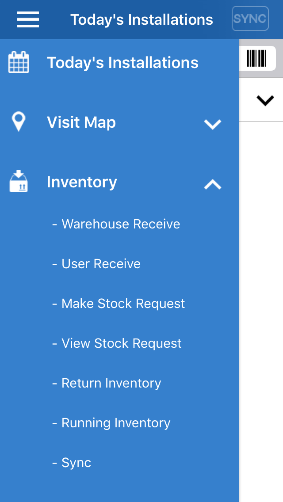

Menu
Mobile Application
››
Menu
This will display the list of menu to navigate to other screens

Steps
Click on
icon to open the above menu
Click on
icon to expand the inventory menu
Created with the Personal Edition of HelpNDoc:
Free help authoring tool